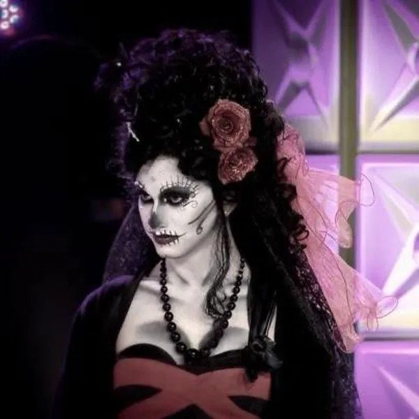
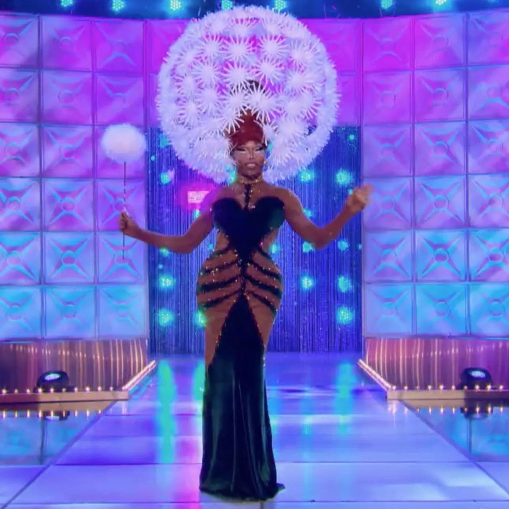
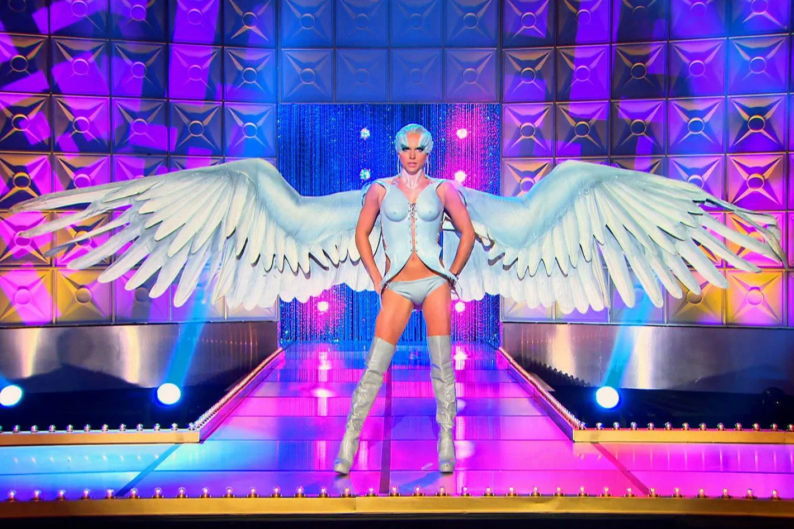
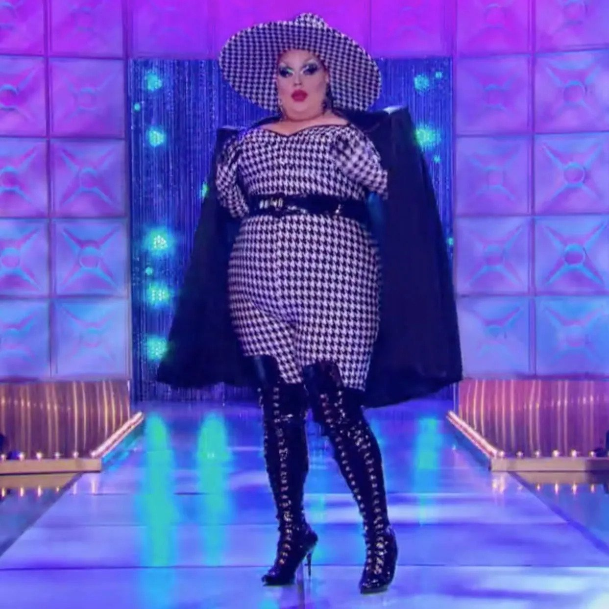

The
Wiki!

Iconic Lewks!
Hey squirrel friends! Mama Ru wants to show you some of my favorite lewks from the main seasons!
Now, I'm a busy girl, and theres been HUNDREDS of outfits, so I'm only going to show you a few looks.
If you want to see more of my favorite looks, however, you can see them here!

Jinkx Monsoon wore a pirate drag look in season 5 episode 4 of RuPaul's Drag Race, which was the "Black Swan: Why It Gotta Be Black?" challenge. The outfit was a playful and whimsical take on the traditional pirate costume.
Jinkx's pirate drag look included a black corset with gold trim and a white ruffled shirt underneath. She wore black high-waisted pants with gold stripes down the sides, black boots, and a black hat with a gold skull and crossbones on the front.
To complete the pirate look, Jinkx wore a long black and gold coat with oversized cuffs, and a red sash around her waist. She accessorized with gold hoop earrings, a gold belt, and a fake hook hand. Her makeup was dramatic, with a bold smoky eye, red lips, and heavily contoured cheekbones.
Overall, Jinkx's pirate drag look was a creative and playful interpretation of the challenge. The outfit showcased her ability to think outside of the box and add unique touches to traditional costumes.

Asia O'Hara wore a stunning and dramatic hat look in season 10 episode 10 of RuPaul's Drag Race, which was the "Evil Twin" runway challenge. The hat was a beautiful and intricate piece that added a touch of drama and elegance to the outfit.
The hat was a large, wide-brimmed black hat with a structured shape that extended high above Asia's head. The hat was covered in delicate, sheer black fabric that draped down over the brim, creating a dramatic effect. The fabric was adorned with glittering jewels and sequins, adding a touch of sparkle and glamour to the hat.
To complement the hat, Asia wore a black, long-sleeved bodysuit that featured sheer cutouts on the arms and chest. She wore black fishnet stockings and black platform boots, adding to the overall dramatic effect of the outfit. Her makeup was bold and dramatic, with a bold red lip, dark smoky eye makeup, and heavily contoured cheekbones.
Overall, Asia's hat look was a stunning and memorable interpretation of the challenge. The hat was a beautiful and intricate piece that showcased Asia's attention to detail and artistic abilities. The overall effect was a dramatic and elegant look that commanded attention and showcased Asia's creativity and personality.

Courtney Act wore a stunning bird-inspired look in season 6 episode 9 of RuPaul's Drag Race, which was the "Drag My Wedding" challenge. The outfit was a beautiful interpretation of a peacock, with intricate details and bold colors.
The dress was a fitted strapless gown with a sweetheart neckline and a high-low hemline, with layers of blue, green, and purple feathers cascading down the back. The bodice of the dress was embellished with blue and green sequins, adding a touch of glamour and sparkle to the outfit.
To complete the peacock-inspired look, Courtney wore a large headdress made of blue and green feathers, with a peacock feather extending from the top. She also wore a pair of blue feathered gloves that matched the dress.
Courtney's makeup was stunning, with bold and dramatic eye makeup that featured green and blue glitter, and a bold red lip. Her overall look was elegant and graceful, with the feathers adding movement and texture to the outfit.
Overall, Courtney's bird look was a beautiful and unique interpretation of the challenge. The attention to detail and the use of vibrant colors and feathers created a memorable and stunning outfit that showcased her creativity and artistic abilities.

Eureka O'Hara wore a memorable and bold hat look in season 10 episode 6 of RuPaul's Drag Race, which was the "Drag Con Panel Extravaganza" challenge. The hat was a show-stopping piece that instantly caught the judges' attention and made a statement.
The hat was a wide-brimmed hat that was covered in bold and colorful accessories. The base of the hat was black, and it was adorned with several different items, including plastic fruit, flowers, feathers, and even a toy lizard. The hat also featured a green tulle veil that draped over the back, adding a touch of glamour and drama to the look.
To complement the hat, Eureka wore a black bodysuit with a high neckline, long sleeves, and a sheer cutout on the chest. She also wore black fishnet stockings and black platform boots. Her makeup was bold and dramatic, with a bold red lip, dramatic eye makeup, and heavily contoured cheekbones.
Overall, Eureka's hat look was a fun and creative interpretation of the challenge. The use of bold and colorful accessories on the hat added personality and quirkiness to the outfit, while the black bodysuit and fishnet stockings kept the focus on the hat. The overall effect was a memorable and unique look that showcased Eureka's creativity and personality.
Thank you for submitting!